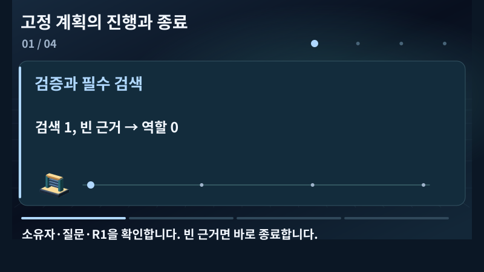
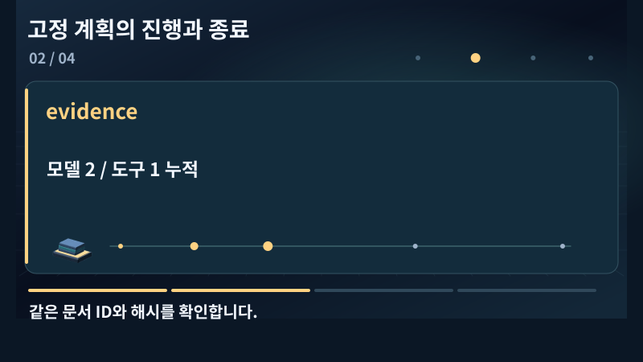
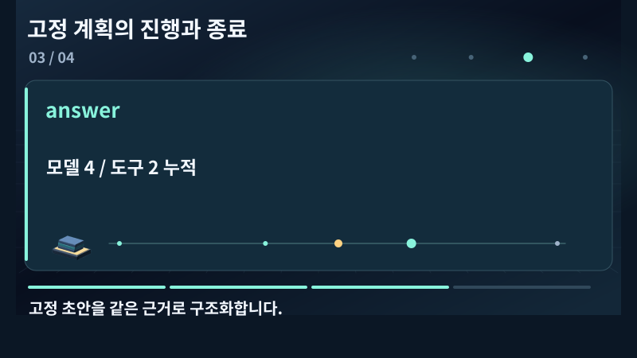
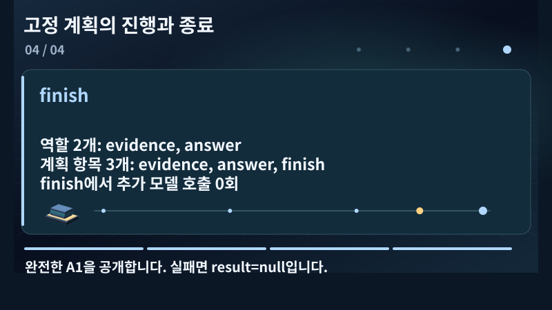

역할을 나누기 전에 같은 결과를 비교하기
같은 과제 제출 질문을 한 역할이 처리했을 때와 근거 담당·답변 담당으로 나눴을 때를 비교합니다. 역할을 늘리기 전에 두 담당자가 실제로 주고받아야 하는 문서와 질문을 정합니다.
수업 노트북
실행을 확인한 커널은 Python 3.12.15입니다.
근거 담당이 다음 역할에 건넬 값
‘근거 담당’에서 출발해 ‘원문과 ID’를 거친 뒤 ‘답변 담당’가 되는 순서를 따라가세요.
근거 담당이 원문과 식별자를 다음 역할에 건넵니다.
다음 역할이 문서 ID만 받으면 원문을 다시 찾아야 합니다. 질문, 근거 원문, 출처 ID를 함께 넘겨 답변의 수치나 위치를 확인할 수 있게 합니다. 여기서는 두 역할을 로컬 함수로 실행합니다.
셀 01 · 답변 담당에게 근거 한 건 인계
두 함수 사이로 지나가는 값과 최종 문장을 따라가세요.
정상 기록에서는 역할을 마친 뒤 finish에 도달해 result를 공개합니다. 뒤의 상한 실험에서는 계획을 끝까지 수행하지 못해 result가 null로 남습니다. 두 결과는 서로 다른 실행입니다.
def evidence_role(question):
return {"question": question, "id": "course-guide-v1:p2",
"text": "과제는 학습 관리 페이지의 과제함에 제출합니다."}
def answer_role(handoff):
return f"{handoff['text']} [{handoff['id']}]"
handoff = evidence_role("과제는 어디에 내나요?")
print(answer_role(handoff))실행 결과
과제는 학습 관리 페이지의 과제함에 제출합니다. [course-guide-v1:p2]
답변 끝의 p2는 근거 담당이 전달한 ID입니다. 문장을 만드는 쪽에서 새로 붙인 문서 번호가 아닙니다.
과제 02 · 역할 간 질문이 바뀌었는지 검사
검색 담당이 받은 원 질문과 인계된 질문이 같은지 확인하세요.
question = '과제는 어디에 내나요?'
# handoff의 질문 필드를 확인하세요.풀이와 실행 결과 보기
question = '과제는 어디에 내나요?'
print(question == handoff['question'])실행 결과
True
True입니다. 문서가 같더라도 질문이 바뀌면 두 방식의 결과를 같은 과제로 비교하기 어렵습니다.
같은 질문에서 늘어난 호출 읽기
‘같은 질문’를 기준으로 양쪽의 ‘단일 역할’와 ‘분업 호출 수’를 대조하세요.
같은 결과에 몇 번의 호출이 들었는지 비교합니다.
제공 파일 role-comparison.json에서 Q01 두 행을 골랐습니다. 검색 결과는 고정했고 모델은 수업용 대본입니다. 모델 호출 수와 업무상 필수 검색 수를 섞지 마세요.
셀 03 · 양쪽 실행의 모델 호출 차이
single과 two_roles의 기록에서 모델 호출 횟수가 얼마나 달라졌는지 계산하세요.
single = {"model_calls": 2, "mandatory_retrieval_calls": 1}
two_roles = {"model_calls": 4, "mandatory_retrieval_calls": 1}
print(two_roles["model_calls"] - single["model_calls"])실행 결과
2
같은 질문에서 대본 모델 호출이 두 번 늘었습니다. 필수 검색 횟수는 양쪽 모두 1입니다. 이 결과만으로 실제 서비스 요금이나 답변 품질이 좋아졌다고 판단할 수 없습니다.
다시 풀어 보기
두 번째 역할이 새로운 근거를 더했는지, 같은 문서를 한 번 더 전달했는지 코드와 관찰값을 근거로 설명하세요. 역할 하나로 충분하다면 팀 설계에도 그렇게 기록하면 됩니다.
관련 개념 더 읽기
이전 결과와 오늘의 질문을 가져오기
63일 서비스는 필수 검색 뒤 제한된 에이전트에 같은 근거를 전달했습니다. 64일에는 읽기와 문의 등록을 분리하고 사람 확인 전에는 등록하지 않았습니다. 65일 분류기는 요청을 읽기나 제안 경로로 보냈지만 승인을 대신하지 않았습니다. 오늘은 이 경계 위에서 읽기 작업을 두 역할로 나눌 이유가 있는지 비교합니다.
첫 교시의 15분을 씁니다. 처음 5분에는 Q03의 p3 원문과 이전 수정 이력을 찾습니다. 다음 5분에는 최초 검색과 검색된 근거를 다시 전달하는 도구를 구분합니다. 마지막 5분에는 answer/propose/clarify/classifier_error 중 실제 서비스가 호출되는 경우를 말합니다. 선수 설명이 어려우면 Q01 하나의 원문과 trace를 먼저 읽고 선택 과제 시간을 줄입니다.
자신의 58·63·64·65 기록이 없으면 제공 관찰을 사용했다고 표시합니다. 제공 JSON이 있다고 본인이 과제를 수행했거나 팀이 승인 절차를 운영했다고 쓰지 않습니다.
| 앞선 장 | 확인할 내용 | 제공 파일 |
|---|---|---|
| 58·63 | 고정 문서 답변 Skill과 필수 검색 | upstream64/read_service/skills, provided |
| 64 | 대기·명시 승인·중복 재개 | upstream64/provided/approval-resume.json |
| 65 | 선택·추가 질문·분류 오류·서비스 미호출 | routing65/provided/project-routing.json |
역할은 이름보다 입출력과 책임으로 구분합니다
역할은 작업 중 무엇을 받아 무엇을 돌려줄지 정한 책임입니다. 여기서 근거 확인 역할은 이미 검색된 R1의 ID와 내용이 바뀌지 않았는지 확인하고, 답변 역할은 그 근거로 만든 초안을 A1로 돌려줍니다. 두 역할에 “전문가”라는 이름을 붙여도 실제 원문 의미를 이해하는 능력이 생기지는 않습니다.
위임은 다른 실행 단위에 입력을 넘기고 결과를 받는 일입니다. 오늘 조정자는 Python 코드입니다. 정해진 두 역할을 순서대로 부르고 실패하면 멈춥니다. 공식 Subagents 문서의 중심 모델이 하위 에이전트를 도구로 선택하는 방식과 구분합니다. 이 장은 고정 순서를 관찰하기 위해 작은 Graph를 사용합니다.
| 역할 | 입력 | 출력 | 판정하지 않는 것 |
|---|---|---|---|
| evidence | 같은 질문/k와 검증된 R1 | 문서 ID 목록·전체 R1 해시 | 주장이 사실인지, 새로운 계획이 좋은지 |
| answer | 같은 R1·고정 생성 초안 | AnswerDraft 뒤 A1 | 실제 LLM 성능·학생 답안의 정답 여부 |
| 조정자 | 고정 계획·공유 잔여 예산 | 완료 또는 오류 | 자율 계획·자유로운 도구 선택 |
evidence_sha256는 전체 R1을 같은 규칙으로 직렬화한 바이트 해시입니다. 원문과 다른 문장을 같은 ID로 바꾸면 값이 달라집니다. 해시가 같다는 사실은 전달한 바이트가 같다는 증거이며, 원문의 설명이 사실인지에 대한 판정은 별도로 해야 합니다.
비교 조건과 횟수의 단위를 먼저 고정하기
질문·검색 규칙·문서·k·생성 규칙이 달라지면 역할 수 때문에 결과가 바뀌었는지 알기 어렵습니다. 기본 비교는 course-guide-v1의 Q01–Q04, k=2, 같은 Skill과 고정 생성 규칙을 사용합니다. 허용 상한도 두 방식 모두 모델 4회·실제 도구 2회입니다. 실제 사용 횟수와 허용 상한은 서로 다른 값입니다.
| 필드 | 세는 대상 | 정상 두 역할 |
|---|---|---|
| mandatory_retrieval_calls | 최초 문서 검색 | 1 |
| agent_evidence_adapter_calls | 이미 검색된 근거를 역할에 전달 | 2 |
| draft_generate_calls | 고정 초안 생성 콜백 | 1 |
| model_calls | create_agent가 모델 대본을 호출 | 4 |
| tool_executions | 허용 검색 도구의 실제 호출 시도 | 2 |
| role_invocations / plan_instructions | 역할 진입 / 종료를 포함한 계획 지시 | 2 / 3 |
단일 기본선을 먼저 실행하기
기본선은 이미 검수된 63의 ProjectService.answer입니다. RoleComparison의 single 설정은 같은 자료를 쓰되 비교용 허용 상한을 4/2로 명시합니다. 객체에 넣는 owners와 AppContext는 신뢰된 앱이 제공한다는 계약이며 여기서 실제 인증을 구현하지 않습니다.
아래 실행은 두 행을 만들고 전체 A1과 실제 횟수를 비교합니다. result 전체를 대조해야 출처 객체나 생성 횟수가 빠지지 않습니다. 답변 문자열만 같다는 검사로는 그 차이를 놓칩니다.
출력의 마지막 숫자 4는 사용 횟수가 아니라 허용 상한입니다. 정상 단일은 모델 2회·도구 1회로 끝나고 두 역할은 모델 4회·도구 2회를 사용합니다. 이 값은 제공 대본에서 관찰한 실행 구조이며 품질이나 금액의 점수가 아닙니다.
같은 근거를 두 실행에 전달하기
각 역할은 별도의 실제 create_agent입니다. 근거 역할의 ToolStrategy는 EvidenceDraft를, 답변 역할은 AnswerDraft를 받습니다. 구조화 출력을 반환하는 마지막 도구 모양의 메시지는 검색 도구 실행 횟수로 중복 세지 않습니다.
계획·반복·종료는 조정자의 코드에 있습니다
계획은 evidence, answer, finish라는 지시 목록입니다. pc는 다음 지시의 위치이며 Graph의 step이 한 지시를 처리한 뒤 다음 위치로 이동합니다. 마지막 finish를 실행해야 준비한 A1을 공개합니다. 답변 역할이 끝났어도 종료 지시 전에 실패하면 부분 답변을 최종 결과로 보내지 않습니다.
반복은 코드가 같은 역할 이름을 다시 넣었을 때 생깁니다. 현재 예제에는 새 문제를 발견해 계획을 스스로 고치는 모델이 없습니다. 역할 호출 횟수와 계획 지시 수를 따로 제한해야 같은 역할 반복이나 끝없는 제어 흐름을 설명할 수 있습니다.
고정 계획의 진행과 종료
학습용 단계 표시입니다. 화면의 다음 버튼은 실제 에이전트를 실행하지 않습니다.
역할이 바뀔 때 원문 ID가 유지되는지, 모델 호출 수가 늘어나는지 보세요.
고정된 실행 계획에서는 각 역할이 같은 근거를 이어받고 필요한 호출만 누적합니다.
- 011
- 022
- 033
- 044

STEP 01 · prepare검증과 필수 검색
소유자·질문·R1을 확인합니다. 빈 근거면 바로 종료합니다.
검색 1, 빈 근거 → 역할 0

STEP 02 · stepevidence
같은 문서 ID와 해시를 확인합니다.
모델 2 / 도구 1 누적

STEP 03 · stepanswer
고정 초안을 같은 근거로 구조화합니다.
모델 4 / 도구 2 누적

STEP 04 · stepfinish
완전한 A1을 공개합니다. 실패면 result=null입니다.
역할 2개: evidence, answer 계획 항목 3개: evidence, answer, finish finish에서 추가 모델 호출 0회
이 결과에서 모델 4회는 이미 사용했지만 계획 상한 때문에 finish를 실행하지 못했습니다. 호출 수가 적거나 많다는 사실만으로 정상 완료를 판단할 수 없습니다. recursion_limit은 비정상 Graph를 막는 추가 제한이며 이 업무의 계획 예산을 대신하지 않습니다.
역할마다 예산을 새로 주지 않기
SharedBudget은 한 요청의 모델·도구 횟수를 보관하는 객체입니다. 두 역할의 정책이 같은 객체를 참조해야 첫 역할에서 쓴 예산이 두 번째 역할에도 반영됩니다. 역할마다 4회를 새로 주면 전체 4회 제한이 되지 않습니다.
검사는 실제 호출 전에 해야 합니다. 모델을 네 번 호출한 뒤 다섯 번째 결과를 버리더라도 다섯 번째 실행 자체는 이미 일어난 것입니다. 도구도 마지막 모델 예산을 쓴 뒤 다시 실행하면 후속 응답을 받을 여유가 없습니다. 아래 정책은 그 도구 요청을 실행 전에 막습니다.
오류를 빈 근거와 합치지 않기
검색이나 도구가 실패하면 결과가 없다는 사실만 남기지 말고 어느 단계에서 무엇이 실패했는지 보존해야 합니다. 같은 ID로 본문을 바꾸는 경우도 자료 동일성 오류입니다. 이때 부분 답변은 result에 넣지 않습니다.
tool_executions는 실제 호출 시도 횟수입니다. 도구 안에서 예외가 나도 1회입니다. 질문이 바뀐 요청은 도구에 들어온 뒤 원래 질문 검사에서 거부되므로 도구 1회, 근거 전달 0회가 될 수 있습니다. 안전한 래퍼는 내부 메시지를 노출하지 않고 예외 클래스명 ServiceError를 기록합니다.
| 사례 | 오류·위치 | 읽을 증거 |
|---|---|---|
| 반복 역할 | role_limit / policy | 역할 2회 뒤 추가 실행 없음 |
| 마지막 모델 예산 | model_limit / policy | 모델 3, 도구 1 |
| 역할 도구 예외 | TimeoutError / tool | 도구 시도 1, 초안 0 |
| 질문 변경 | ServiceError / tool | 근거 전달 0 |
| 같은 ID의 내용 변경 | evidence_changed / role_output | 동일 R1 검사에서 중지 |
| 알 수 없는 역할 | unknown_role / plan | 모델 0 |
전체 비교표와 자기 실행을 남기기
record_role_observations.py는 정상 네 질문의 두 방식 8행과 추가 진단 6행을 실행합니다. handoff-checks.json의 6행은 다른 목적의 연결 확인이므로 역할 비교 품질 분모에 더하지 않습니다. unit test 18개도 학생 점수나 질문 정확도가 아닙니다.
실행이 막힌 경우 어떤 import나 파일이 없었는지 기록하고 제공 trace를 읽는 활동으로 이어갑니다. 직접 실행 목표는 미확인으로 남깁니다. 패키지 설치나 실제 LLM 호출을 성공한 것으로 가정해 표를 채우지 않습니다.
같은 A1과 올바른 의미를 따로 확인하기
Q03 원문에는 오류 화면과 발생 시간, 담당 강사 문의, 비밀키 화면 공유 금지가 함께 있습니다. 일부만 읽고 나머지 제한을 빼면 사용자의 다음 행동이 달라질 수 있습니다. 답변과 원문을 나란히 읽고 일치·모순·자료 없음·미확인을 설명합니다.
읽기 역할과 승인 흐름의 경계를 유지하기
두 역할 비교기는 읽기 전용입니다. 문의 등록 권한이나 resume 도구를 주지 않습니다. 같은 요청을 승인 흐름으로 옮기려면 64의 별도 제안과 확인 절차를 거쳐야 합니다. 66의 비교 예산을 64 승인 예산에 더하거나 새로 나누지 않습니다.
65의 dispatch는 선택 결과에 따라 answer 또는 propose를 호출합니다. propose가 반환한 pending은 등록이 끝났다는 뜻이 아닙니다. 이어지는 approve는 앱이 명시적으로 resume을 호출한 별도 단계입니다. 분류기는 재개하지 않습니다. 추가 질문과 분류 오류에서는 서비스가 호출되지 않습니다.
승인 전 등록 0, 승인 후 누적 1, 중복 재개 후 누적 1을 읽습니다. 실제 외부 등록·인증·DB 중복 방지는 검증하지 않았습니다. 현재의 같은 프로세스 모의 결과를 운영 서비스의 보장으로 확대하지 않습니다.
비교 결과를 요약하고 선택 이유 쓰기
7교시의 30분 동안 student_task.py의 summarize_pair를 완성합니다. 이미 실행한 두 행을 받아 A1 동일성·상태·오류·실제 호출 차이를 요약하는 작은 함수입니다. 새 Graph나 평가 하네스를 만드는 과제가 아닙니다. 원래 행은 수정하지 않습니다.
둘 다 completed일 때만 전체 A1 동일성을 True로 표시합니다. 한쪽이 오류라 result가 없으면 같은 결과로 평가하지 않습니다. 실패 때문에 호출 수가 줄었다면 개선으로 해석하지 않습니다. 함수 검사를 마친 뒤 남은 시간에는 역할 분리 판단 양식에 근거와 미확인을 적습니다.
| 증상 | 확인할 것 | 처리 |
|---|---|---|
| NotImplementedError | 학생 함수 미완성 | 본문의 필드 계약을 구현 후 다시 검사 |
| ModuleNotFoundError | examples 위치·환경 버전·전체 폴더 | 제공 파일 경로를 유지하고 미해결은 기록 |
| 같은 인용인데 내용이 다름 | id만 비교했는지 | R1 전체와 실제 원문을 읽기 |
| 두 역할이 적게 호출됨 | 정상 완료 여부 | 실패·차단의 감소를 이득으로 해석하지 않기 |
다음 평가에 넘길 선택과 미확인
이 제공 사례에서는 단일 읽기를 유지하는 판단이 가능합니다. 같은 대본의 A1이 같고 추가 역할이 실제 의미 검토를 대신하지 않기 때문입니다. 다른 책임·권한·자료를 분리해야 하는 실제 업무라면 그 필요를 새 근거로 평가할 수 있습니다. 결론 자체보다 비교 조건과 설명이 평가 대상입니다.
67일에는 같은 질문과 원문, 전체 비교 행, 역할 분리 판단, 남은 실패와 실행 모드를 넘깁니다. 파일 해시가 같은지 확인하되 해시 일치를 의미 검토로 대신하지 않습니다. 기억·MCP·실제 DB는 필요성을 입증하지 않았다면 미채택으로 적습니다.
| 목표 | 근거충족 | 수정필요·미확인 예 |
|---|---|---|
| O66-1 | 같은 입력/전체 A1/첫 trace 차이 설명 | 답변 문자열만 비교 |
| O66-2 | 공유 상한 위치와 실패·부분 결과 설명 | 역할마다 예산 초기화 또는 오류 누락 |
| O66-3 | 선택 근거와 읽기·승인 경계 인계 | 제공 기록을 학생 성취로 기록 |